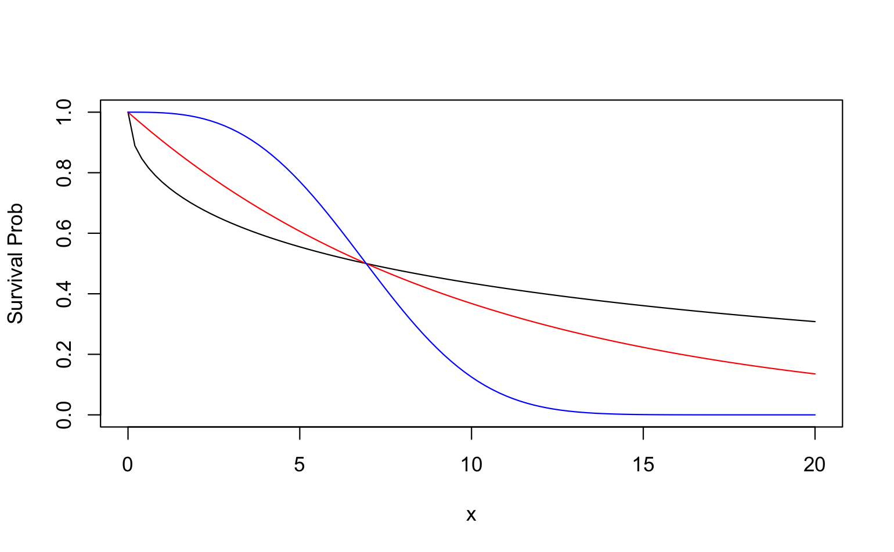
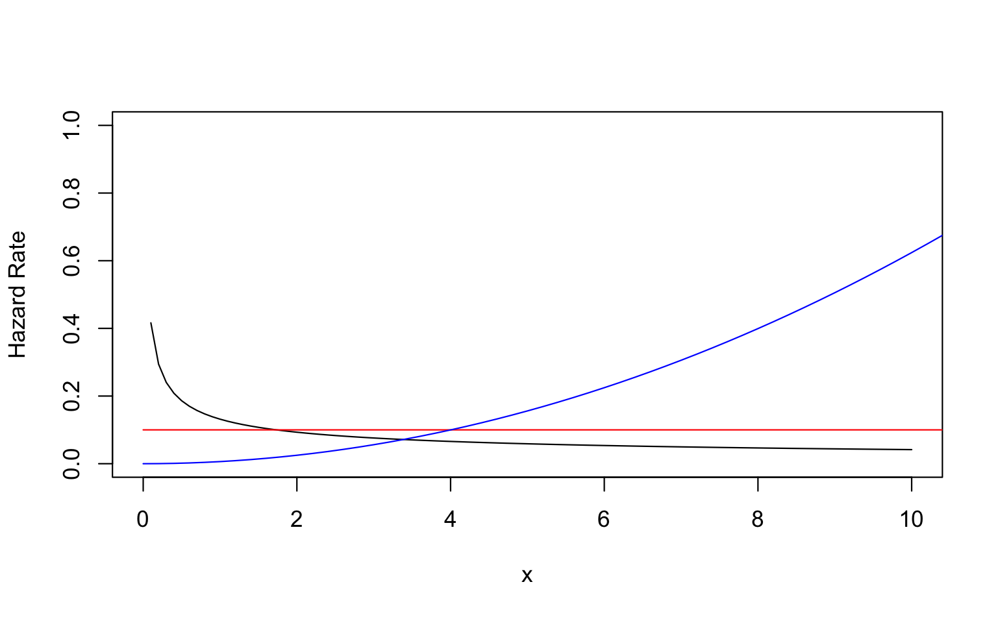

\[
S(x) = Pr(X > x) = \sum_{x_j > x} p(x_j)
\] where \(p(x_j) = Pr(X = x_j)\) is the pmf.
Example for Weibull distribution
\[
S(x) = \exp(-\lambda x^\alpha)
\]
When \(\alpha = 1\), it becomes exponential distribution.
Code
f1 <-function(x) exp(-0.26328* x^0.5)f2 <-function(x) exp(-0.1* x)f3 <-function(x) exp(-0.00208* x^3)curve(f1, from =0, to =20, ylim =c(0, 1), ylab ="Survival Prob")curve(f2, from =0, to =20, add = T, col ="red")curve(f3, from =0, to =20, add = T, col ="blue")

Hazard Function
Hazard function is also known as the conditional failure rate in reliability, the force of mortality in demography, the intensity function in stochastic processes, the age-specific failure rate in epidemiology, the inverse of the Mill’s ratio in economics, or simply as the hazard rate.
\[
h(x)=\lim _{\Delta x \rightarrow 0} \frac{P[x \leq X<x+\Delta x \mid X \geq x]}{\Delta x}
\tag{2}\]
From Equation 2, \(h(x)dx\) can be viewed as the “approximate” probability of an individual of age \(x\) experiencing the event in the next instant.
If \(X\) is continuous, then \[
h(x) = f(x)/S(x) = -\frac{d\ln S(x)}{dx}
\tag{3}\]
curve(0.26328*0.5* x^-0.5, from =0, to =10, ylim =c(0, 1), ylab ="Hazard Rate")curve(0.1*x^0, from =0, to =20, add = T, col ="red")curve(0.00208*3* x^2, from =0, to =20, add = T, col ="blue")

Cumulative hazard function
\[
H(x) = \int_0^x h(u)du = -\ln S(x)
\tag{5}\]
For discrete \(X\), \[
H(x) = \sum_{x_j \leq x} h(x_j)
\] When \(X\) is discrete, \(S(x) = \exp[-H(x)]\) is no longer holds for true.
Mean residual life function and median life
The parameter measures the expected remaining lifetime \(mrl(x)\) is defined as
The mean and median lifetimes for an exponential life distribution are \(1/\lambda\) and \((\ln 2)/\lambda\).
The \(100p\)th percentile for the Weibull distribution is found by solving \(1 - p = \exp\{-\lambda x_p^\alpha\}\) so \(x_p = \{-\ln [1-p]/\lambda \}^{1/\alpha}\)